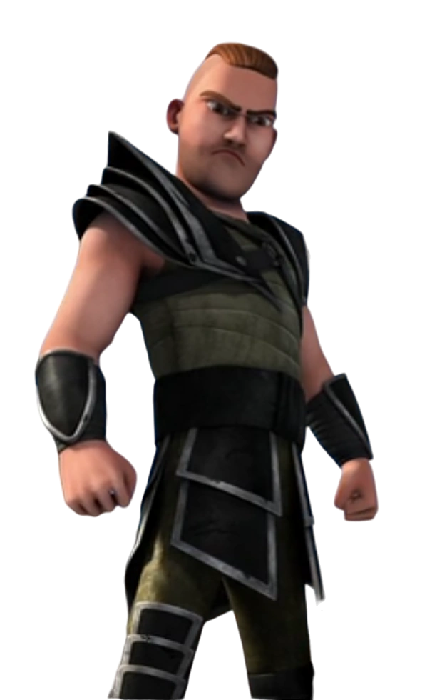

Guerrier des Défenseurs des Ailes
| Rôle | Guerrier Défenseur des Ailes |
| Affiliation | Défenseurs des Ailes |
| Particularité | Lieutenant de confiance de la reine Mala |
Throk est le fidèle lieutenant de la reine Mala parmi les Défenseurs des Ailes. Guerrier dévoué, il assure la protection de l'île et de son Éruptodon sacré. Malgré ses débuts méfiants envers les étrangers dont Harold et son équipe, il devient progressivement un allié solide. Sa loyauté envers Mala est absolue.